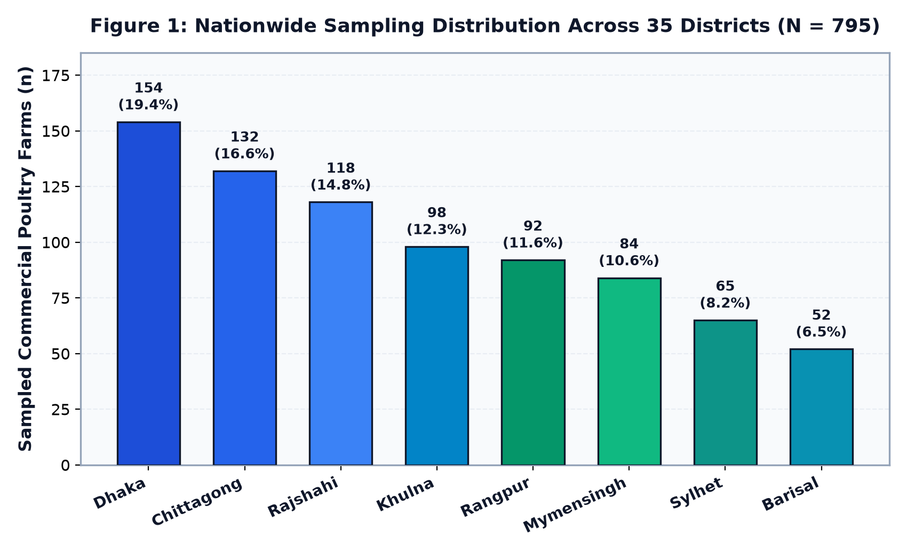

Ethnoveterinary Herbal Practices in Commercial Poultry in Bangladesh
Deep-dive into our cross-sectional study of 795 farms in the Journal of Ethnopharmacology (Vol. 373, Art. 122316), detailing antibiotic reduction, FCR gains, and AMR policy.
Peer-reviewed publication breakdowns, embedded sensory hardware architectures, and lessons from building production-grade AI systems with real-world impact.
A nationwide empirical investigation evaluating 795 commercial poultry farms across 35 districts in Bangladesh. Documenting a statistically significant 43.6% within-group reduction in antibiotic use, improved feed conversion ratios (FCR 1.970 vs 2.144, p < 0.001), and the public health implications of herbal alternatives for antimicrobial resistance mitigation.

Deep-dive into our cross-sectional study of 795 farms in the Journal of Ethnopharmacology (Vol. 373, Art. 122316), detailing antibiotic reduction, FCR gains, and AMR policy.
Ensuring long-term scientific reproducibility with persistent Concept DOIs, permanent archival storage at CERN, and DataCite-compliant research software citations.
Architectural design of test-time compute allocation and attention KV cache pruning to accelerate high-context reasoning models in resource-constrained inference environments.
How our team from SUST built an assistive smart glove that translates Bengali Sign Language into real-time speech, securing pre-seed funding and international honors.
Representing SUST and Bangladesh at Rice University in Houston, Texas with our assistive communication technology, competing against leading global engineering universities.
Developing wearable smart glasses featuring real-time scene parsing, obstacle distance localization, and directional bone-conduction voice synthesis.
Architecting 40+ tactile 3D science simulations with Three.js, WebGL shader pipelines, and interactive physics engines for accessible STEM education.
Architecting privacy-first mental health evaluation frameworks, empathetic AI conversational agents, and encrypted wellness journaling systems.
Overcoming heuristic AI detectors through dynamic burstiness tuning, stylistic lexical variation, and syntactic rhythm restructuring without semantic degradation.
Designing AST taint analysis algorithms and cryptographic entropy scanners to verify the integrity and safety of code generated by large language models.
Techniques for 8-bit model quantization, pruning, and memory optimization to achieve real-time neural inference on low-power microcontrollers and edge hardware.
Comprehensive chronicle of television broadcasts, print press coverage, and innovation awards celebrating assistive technology built at SUST.